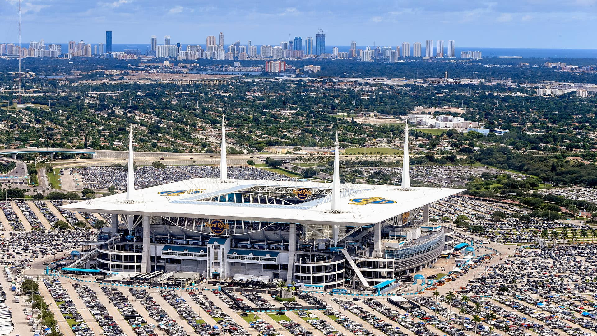

16 October 2021 - Formula 1 plans to hit a new record this year with 23 races on the season calendar for the first time in sport history. The teams and spectators will travel across 21 different countries, the USA and Italy having 2 races each, and will fly around the globe across 5 continents.
For the second year in a row, Bahrain will open the campaign at the Bahrain International Circuit. The show will then travel to nearby Saudi Arabia, go down to the supposed-to-be opening venue Australia, then fly all the way to Italy in Europe. The teams will then go to the exciting new addition of Miami in early May, and then fly all the way back to Europe for Spain, Monaco, and Azerbaijan.
After Baku City, the campaign moves on to Canada, and then once again goes back to Europe for Britain, Austria, France, and Hungary. A summer break then takes place after the race in Mogyoród, and the show continues in Belgium a month later. There, the teams continue the season in Europe, go to Asia for Singapore and Japan, and travel to the Americas for Texas, Mexico City, and São Paulo. For the 9th year in a row, Abu Dhabi will hold the season finale.
While the calendar has been seen as a positive for fans, especially with the return of Australia, Canada, Singapore, and Japan for the first time in 3 years, as well as the addition of a Formula 1 race in Miami, the overcrowded racing schedule has been met by a huge wave of criticism for its negative effect on the drivers and teams.
"It's a very important issue, because you can imagine how many trips they have to make to different countries around the world," former world champion Emerson Fittipaldi states. "On top of that, they have jetlags and have to deal with distance from family. It's a difficult life, not only for the drivers, but also for the mechanics and the whole team."
The former driver is therefore hoping for change. "If you consider during the season how many days they stay at home and how many they travel, it's a lot. In our time we had fourteen, fifteen GPs, but also a lot of testing between races. That meant more travel. Nowadays it's not much, but they go to the simulator and have physical training, plus commitments between weekends. I don't know how they manage with 22 GPs. And next year's 23 races are not normal."
The 2022 season is set to start on March 20. With new driver lineups and new regulations, an exciting and hectic season is underway for teams and fans alike.
See also: Everything you have to know for the upcoming 2022 season